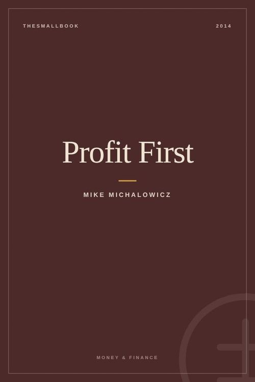

Why Did Farmdrop Fail?
The farmers market meets cold storage
What happened
Farmdrop tried to make British grocery shopping local and ethical online, sourcing from producers and delivering with a cleaner conscience. Customers who cared loved the intent. Grocery margins are brutal even without higher sourcing and delivery promises. Funding tightened and Farmdrop entered administration in 2021 just before Christmas, leaving producers and shoppers exposed.
The fatal mistake
Stacking ethical sourcing, fresh logistics and home delivery on supermarket thin margins.
The lesson
Good values still need a basket that survives delivery.
The antidote book

Sales − Profit = Expenses. Take profit FIRST, hide it, and let the business survive on what remains - because it will.
READ THE SUMMARY OPEN INTERACTIVE BOOKQuestions people ask about Farmdrop
Why did Farmdrop fail? Stacking ethical sourcing, fresh logistics and home delivery on supermarket thin margins.
How much was lost? Administration in 2021
What is the lesson? Good values still need a basket that survives delivery.
Farmdrop kyun fail hua? In simple English: Stacking ethical sourcing, fresh logistics and home delivery on supermarket thin margins. The cost was Administration in 2021.
Keep digging
More startup failures · Open the full Graveyard
Read the antidote book summary: Profit First
Related failures
- Why did 23andMe fail? 2025 · 15 Million DNA Profiles, No Second Act
- Why did Vice Media fail? 2024 · The $5.7B Media Rebel That Died of Believing Its Hype
- Why did Pepperfry fail? 2024 · 10 Years of Furniture E-Commerce, Ended by a Fire Sale
- Why did Lilium Jet fail? 2024 · $1.5B Burned on 36 Electric Jet Fans
- Why did Koo fail? 2024 · India's Twitter Died Waiting for Twitter to Die
- Why did Forward Health fail? 2024 · The AI Doctor's Office Closed Overnight
Questions people ask about Farmdrop
Why did Farmdrop fail? Stacking ethical sourcing, fresh logistics and home delivery on supermarket thin margins.
How much was lost? Administration in 2021
What is the lesson? Good values still need a basket that survives delivery.
Farmdrop kyun fail hua? In simple English: Stacking ethical sourcing, fresh logistics and home delivery on supermarket thin margins. The cost was Administration in 2021.
Keep digging
More startup failures · Open the full Graveyard
Read the antidote book summary: Profit First
Related failures
- Why did 23andMe fail? 2025 · 15 Million DNA Profiles, No Second Act
- Why did Vice Media fail? 2024 · The $5.7B Media Rebel That Died of Believing Its Hype
- Why did Pepperfry fail? 2024 · 10 Years of Furniture E-Commerce, Ended by a Fire Sale
- Why did Lilium Jet fail? 2024 · $1.5B Burned on 36 Electric Jet Fans
- Why did Koo fail? 2024 · India's Twitter Died Waiting for Twitter to Die
- Why did Forward Health fail? 2024 · The AI Doctor's Office Closed Overnight
They paid full price. You get the lesson in simple English.